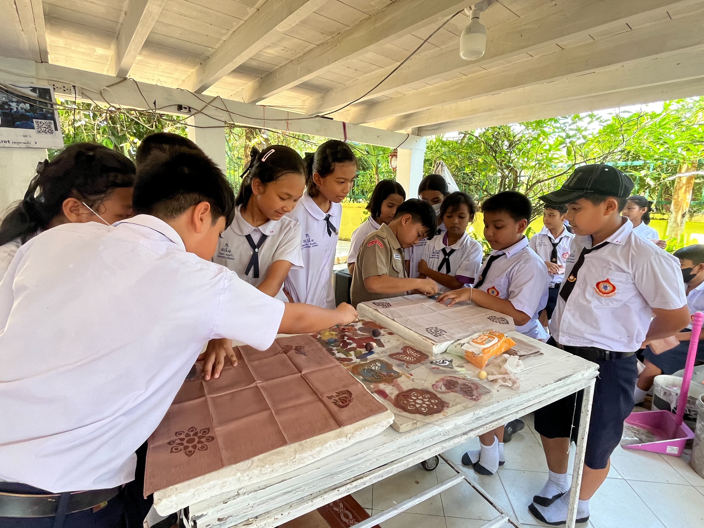
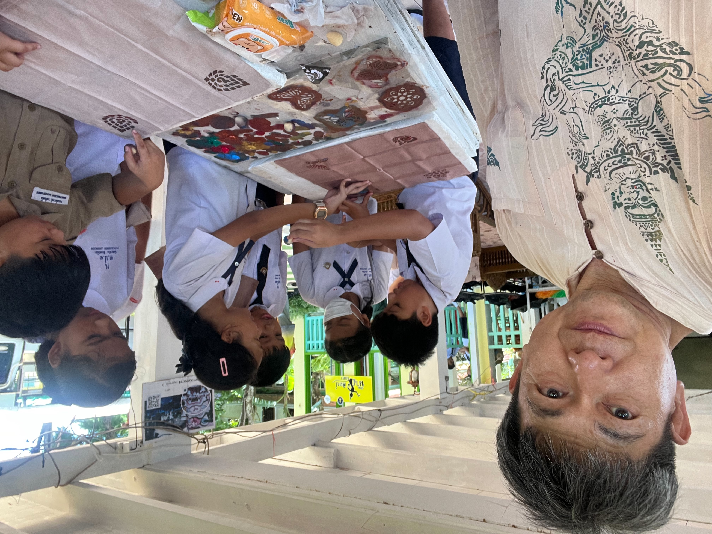
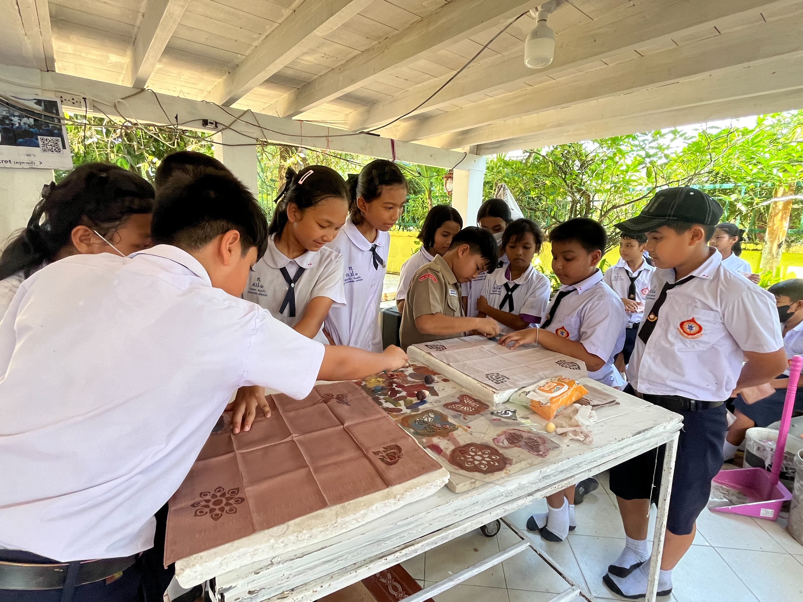
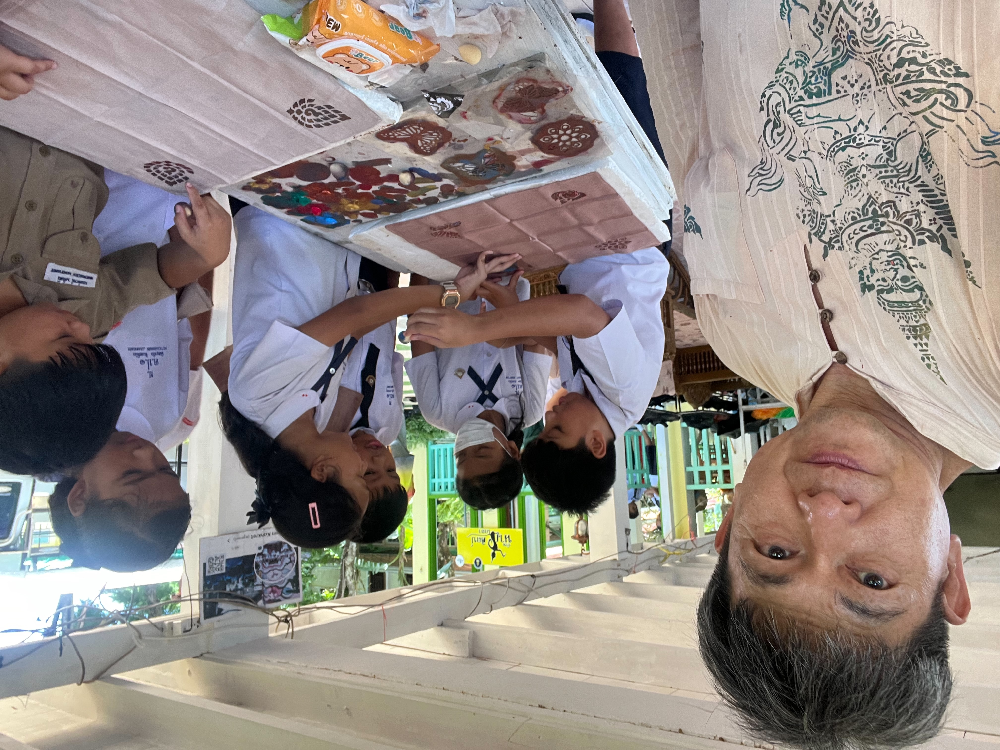

กิจกรรม: กิจกรรมทำผ้าหมักดินเกร็ดพิมพ์เขียนลายไทย
เป็นกิจกรรมสร้างสรรค์ที่ผู้เข้าร่วมจะได้เรียนรู้การหมักผ้าด้วยดินธรรมชาติเพื่อสร้างลวดลายและสีสันเฉพาะตัว จากนั้นพิมพ์หรือเขียนลายไทยลงบนผ้า เพื่อสะท้อนความงดงามของศิลปวัฒนธรรมไทย พร้อมส่งเสริมการใช้วัสดุธรรมชาติและอนุรักษ์ภูมิปัญญาไทย
 


